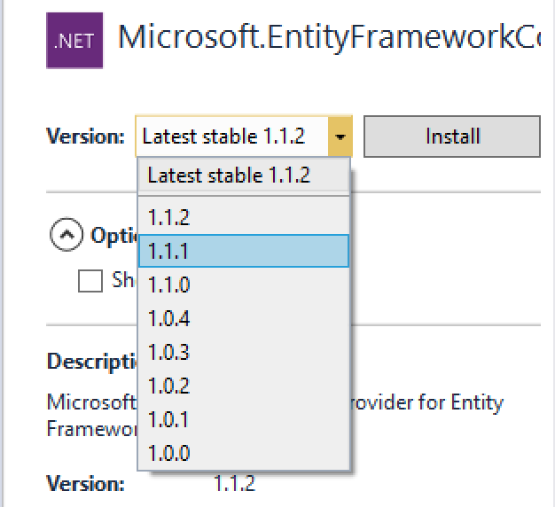
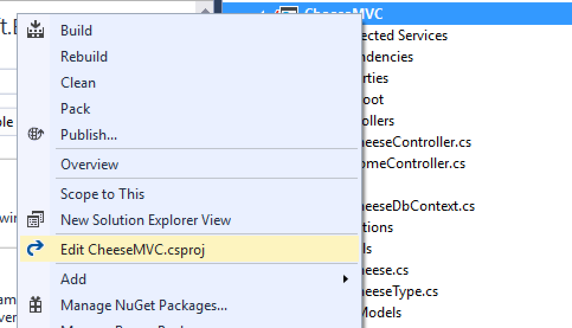
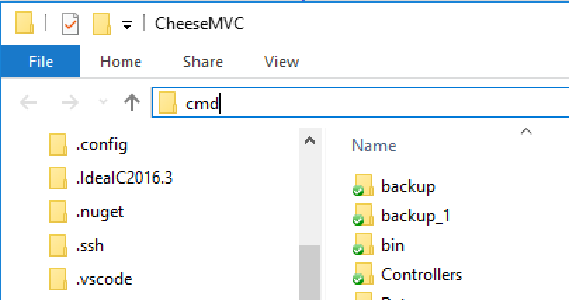

EntityFrameworkCore Setup
This article will show you how to enable the EntityFrameworkCore object-relational mapping framework. It assumes you are using Visual Studio 2017.
These instructions will enable EntityFrameworkCore (EF Core) for a given ASP.NET Core MVC project. You will need to follow these steps for every project you want to use EF Core with. At the bottom of this article we introduce an easier way to enable EF Core for new projects.
For the purpose of illustration, all examples will assume you're working with the CheeseMVC project. If you use these instructions with another project, change project names accordingly.
Setting Up EntityFrameworkCore With an Existing App
Install SqlServer Dependencies
Open the NuGet Package Manager by right-clicking on the project name in the Solution Explorer and selecting Manage NuGet Packages.

In the Browse tab of the package manager, search for Microsoft.EntityFrameworkCore.SqlServer. You will see this package along with one other, Microsoft.EntityFrameworkCore.SqlServer.Design, appear in the results.
Install v1.1.1 of both packages by selecting this version from the pane at right. This is not the default version, so be sure to select it manually.
You'll be asked to accept the license agreement for the package, and then you'll see some console output as the packages are installed.
Install EntityFrameworkTools
Right-click on the CheeseMVC project in the Solution Explorer, and select Edit CheeseMVC.csproj.
In the file that opens, copy and paste the following lines near the bottom, just inside the closing </Project> tag.
<ItemGroup>
<PackageReference Include="Microsoft.EntityFrameworkCore.Tools" Version="1.0.0-msbuild2-final" />
<DotNetCliToolReference Include="Microsoft.EntityFrameworkCore.Tools.DotNet" Version="1.0.0-msbuild2-final" />
</ItemGroup>Again, right-click on the CheeseMVC project in the Solution Explorer, and this time select Open Folder in File Explorer

In the window that opens, click the far right portion of the address bar which will highlight the file path, and then type in cmd, and hit Enter. This will open a command prompt in the project folder
At the command prompt, run dotnet restore to have the NuGet package manager fetch the packages that you added in CheeseMVC.csproj.
When this completes, test that the EntityFramework CLI (Command-Line Interface) Tools were properly installed by running dotnet ef. The output should look like this:
Now you can close the cmd by typing "exit" and Enter. If you see an error message, or anything other than this output, go back to the top of this tutorial and double-check each of the steps, paying special attention to the package versions.
Configure Database Location
In the Solution Explorer, open appsettings.json

Add the following setting at the top of the file within the outer curly-braces:
"ConnectionStrings": {
"DefaultConnection": "Server=(localdb)\\mssqllocaldb;Database=CheeseMVC;Trusted_Connection=True;MultipleActiveResultSets=true"
},The full appsettings.json file will look something like this:
{
"ConnectionStrings": {
"DefaultConnection": "Server=(localdb)\\mssqllocaldb;Database=CheeseMVC;Trusted_Connection=True;MultipleActiveResultSets=true"
},
"Logging": {
"IncludeScopes": false,
"LogLevel": {
"Default": "Debug",
"System": "Information",
"Microsoft": "Information"
}
}
}This sets up a connection string for a local database, SQL Server Express LocalDB. This is a lightweight database that is useful for development. You would never use this database for an active public application (aka a "production application").
Setting Up EntityFrameworkCore With a New App
You can create a brand new project with the above packages and settings already in place (so that you won't have to follow all the steps above that you must do for existing projects) by enabling individual user accounts in the New Project dialog.
When creating a new ASP.NET Core MVC app, select Change Authentication in the project template screen.

In the modal that opens, select Individual User Accounts.

Aside from enabling a local database and EntityFrameworkCore, this also (as you might expect) enables basic user account functionality. We'll look at how to use this functionality in a future lesson.